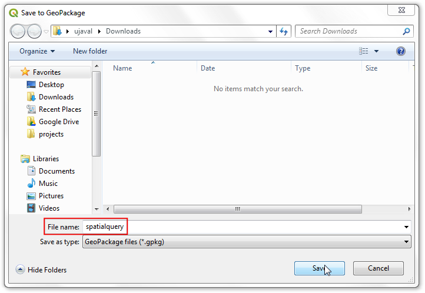

Ujaval Gandhi
Ujaval GandhiRäumliche Abfragen ausführen (QGIS3)¶
Räumliche Abfragen sind das Herzstück vieler GIS-Analysen. Sie erlauben die Selektion von Objekten eines Layers in Abhängigkeit von der räumlichen Beziehung (überschneiden, beinhalten, berühren usw.) zu Objekten aus anderen Layern. In QGIS wird diese Funktionalität über die Verarbeitungswerkzeuge Nach Position selektieren und Nach Position extrahieren bereit gestellt.
Überblick über die Aufgabe¶
Wir werden mit 2 Layern der Stadt Melbourne in Australien arbeiten. Die Layer enthalten alle Pubs und Bars der Stadt sowie alle U-Bahn-Stationen. Unser Ziel ist es, alle Bars und Pubs in einem Umkreis von 500 Metern um eine U-Bahn-Station zu finden.
Weitere Fähigkeiten, die wir erlernen¶
Die Wahl der richtigen Projektion und die Reprojizierung von Vektordaten
Erstellung von Puffern
Die Arbeit mit dem Datenformat geopackage (.gpkg)
Beschaffung der Daten¶
Die Open-Data-Plattform der Stadt Melbourne bietet viele Datensätze über die Stadt an, die mit einem GIS verarbeitet werden können.
Download the Metro Train Stations with Accessibility Information dataset by Metro Trains Melbourne. Export the data in the Original format.

Download the Bars and pubs, with patron capacity dataset by City of Melbourne’s Census of Land Use and Employment (CLUE). Export the data as a CSV.

Der Einfachheit halber können wir eine Kopie der Datensätze unter folgenden Links herunterladen:
metro_stations_accessbility.zip
Bars_and_pubs__with_patron_capacity
Datenquelle: [CITYOFMELBOURNE]
Arbeitsablauf¶
Wir suchen im QGIS-Browser den Datensatz
metro_stations_accessbility.zipund erweitern ihn. Die Dateimetro_stations_accessbility.shpziehen wir in den Arbeitsbereich. Der neue Layermetro_stations_accessbilitywird nun im Layer-Panel angezeigt.

Der Datenlayer der Bars und Pubs liegt im CSV-Format vor. Um ihn in QGIS zu laden, wählen wir . (Siehe Import von Tabellenblättern oder CSV-Dateien (QGIS3) für weitere Details zum Import von CSV-Dateien)

In the Data Source Manager | Delimited Text dialog, browse and select the downloaded
Bars_and_pubs__with_patron_capacity.csvfile as File name. The X field and Y field columns should be auto selected tox coordinateandy coordinaterespectively. Click Add.

Bemerkung
QGIS saves the last-selected options for this dialog, so if you previously configured this dialog with other options, they may still be selected. Specifically, make sure the Record and Fields Options section has Number of header lines to discard option set to 0.
Ein neuer Layer
Bars_and_pubs__with_patron_capacitywird zum Layer-Panel hinzugefügt. Beide Eingabelayer sind im Koordinatenbezugssystem (KBS)EPSG:4326 WGS84. definiert. Um räumliche Analysen ausführen zu können, wird empfohlen, ein projiziertes Koordinatenbezugssystem (KBS) zu verwenden. Deshalb werden wir zunächst die Layer in ein geeignetes regionales KBS reprojizieren, welches Verzerrungen minimiert und uns erlaubt, mit Abstandseinheiten wie Metern anstelle geographischer Grade zu arbeiten. Dazu wählen wir .

Wir suchen das Werkzeug und starten es durch Doppelklick.

Wir wählen
Bars_and_pubs__with_patron_capacityals Eingabelayer und betätigen die Schaltfläche KBS wählen neben Ziel KBS.

Bei einem projizierten Koordinatenbezugssystem für unsere Analyse sollte es sich um ein regionales KBS für das betreffende Gebiet handeln. Für Australien ist das Map Grid of Australia (MGA) 2020 ein UTM-basiertes Gittersystem, das für lokale und regionale Karten verwendet wird. Melbourne liegt in der UTM-Zone 55, sodass wir das KBS GDA 2020 / MGA zone 55 EPSG:7855` auswählen können.

Bemerkung
Wenn man sich nicht sicher ist, welches lokale KBS für das Arbeitsgebiet passend ist, kann man das KBS mit einer UTM-Zone basierend auf dem geographischen Datum WGS84 verwenden. Die UTM-Zone des Arbeitsgebietes kann man mit Hilfe der website UTM Grid Zones of the World herausfinden.
Als nächstes betätigen wir die Schaltfläche … neben Reprojiziert und wählen
Speichere in GeoPackage.... Geopackage ist das empfohlene offene Format für räumliche Daten und das Standardaustauschformat in QGIS3. Eine einzelne GeoPackage-Datei (.gpkg) kann mehrere Vektor- und Rasterlayer enthalten.

Wir nennen das GeoPackage
spatialqueryund betätigen die Schaltfläche Speichern.

Bei der Abfrage des Layernamens geben wir
bars_and_pubsein und bestätigen mit OK. Dann betätigen wir die Schaltfläche Starte, um den Layer zu reprojizieren.

Das Fenster zeigt nach Ausführung des Algorithmus den Protokoll-Tab. Die Erstellung des Ausgabelayers
bars_and_pubswird hier angezeigt.

Jetzt werden wir den Layer
metro_stations_accessbilityreprojizieren. Dazu wechseln wir im Fenster Layer reprojizieren zurück zum Tab Parameter. Wir wählenmetro_stations_accessbilityals Eingabelayer. Das Ziel KBS lassen wir unverändert. Dann betätigen wir die Schaltfläche … neben Reprojiziert und wählenSpeichere in GeoPackage.... Wir wählen dieselbe Ausgabedateispatialquery. (Eine GeoPackage-Datei kann mehrere Layer enthalten, sodass wir auch den neuen Layer in derselben Datei speichern können.) Wir gebenmetro_stationsals Layername ein und betätigen die Schaltfläche Starte.

Zurück im QGIS-Hauptfenster sehen wir 2 neue Layer im Layer-Panel:
bars_and_pubsundmetro_stations. Die Sichtbarkeit der Ausgangslayer können wir ausschalten. Jetzt führen wir die räumliche Abfrage aus. Da wir die Bars und Pubs in einem Umkreis von 500 m um die U-Bahnstationen suchen, ist der erste Schritt die Erstellung eines Puffers um die U-Bahnstationen. Der Puffer repräsentiert unser Suchgebiet. Im Fenster Verarbeitungswerzeuge suchen wir und starten den Algorithmus per Doppelklick.

Im Dialogfenster Puffer wählen wir
metro_stationsals Eingabelayer. Wir setzen den Abstand auf500Meter. Die Ausgabe speichern wir unter Gepuffert im selben GeoPackagespatialqueryund gebenmetro_stations_buffersals Layername an. Wir starten die Verarbeitung mit der Schaltfläche Starte.

Wir sehen den neu hinzugefügten Layer
metro_stations_buffersim Layer-Panel. Nun können wir ermitteln, welche Punkte des Layersbars_and_pubsinnerhalb der Polygone des Layersmetro_stations_pufferliegen. Unter Verarbeitungswerkzeuge suchen wir und starten den Algorithmus per Doppelklick.

Bemerkung
Nach Position extrahieren erstellt einen neuen Layer mit den passenden Objekten der räumlichen Abfrage. Wenn man Objekte nur auswählen möchte, genügt das Tool Nach Position selektieren.
Im Dialogfenster Nach Position extrahieren wählen wir
bars_and_pubsunter Objekte extrahieren aus. Unter Ort der Objekte wählen wirschneidet. Bei Durch Vergleich mit Objekte aus wählen wirmetro_stations_puffer. Die Ausgabe speichern wir im GeoPackagespatialqueryals Layerselectedund betätigen dann die Schaltfläche Starte.

Nach Abschluss der Verarbeitung wird der Layer
selectedim Layer-Panel angezeigt. Es ist zu beachten, dass dieser Layer nur die Punkte enthält, die innerhalb der Pufferpolygone liegen.

Unsere Analyse ist abgeschlossen. Wir bemerken vielleicht, dass die Pufferpolygone oval sind. Das liegt daran, dass unser Projekt-KBS noch auf EPSG:4326 WGS84 eingestellt ist. Um die Ergebnisse besser zu visualisieren, können wir unter das KBS
GDA 2020 / MGA zone 55 EPSG:7855wählen, welches wir auch für die Analyse verwendet haben. Nachdem wir das KBS eingestellt haben, erscheinen die Puffer in ihrer korrekten Form.

If you want to give feedback or share your experience with this tutorial, please comment below. (requires GitHub account)